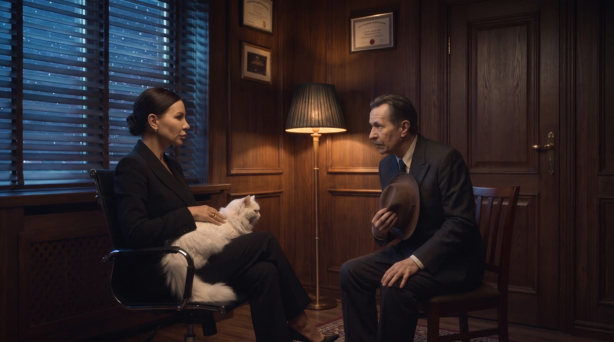
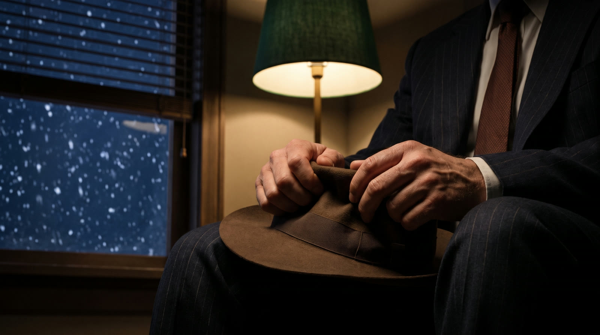
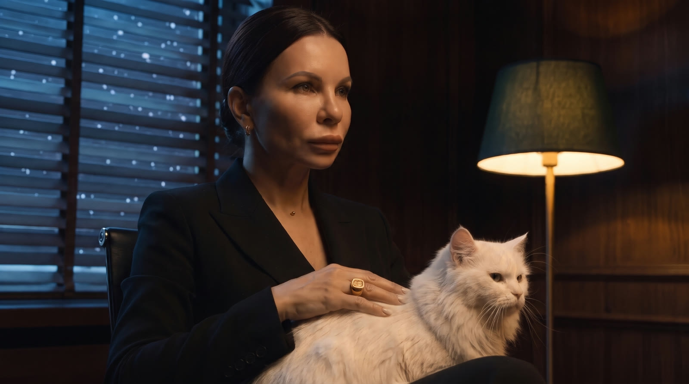
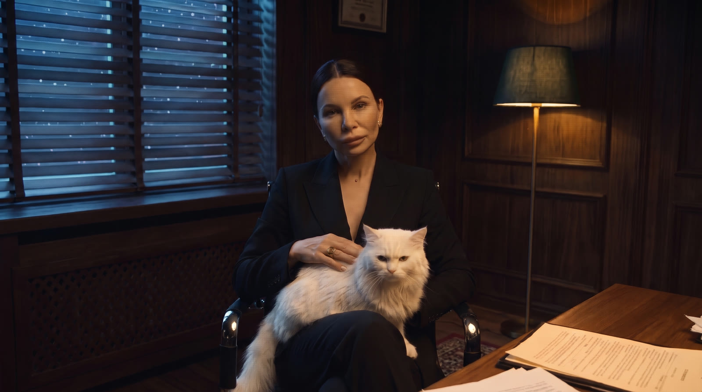
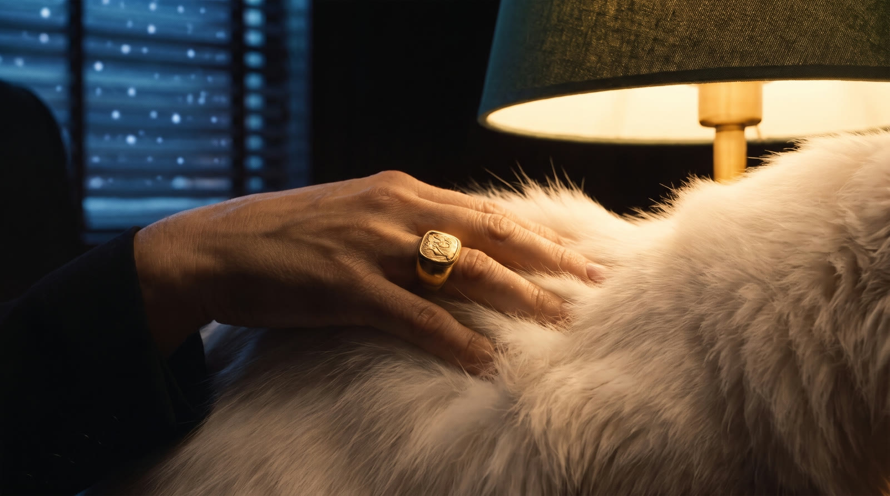
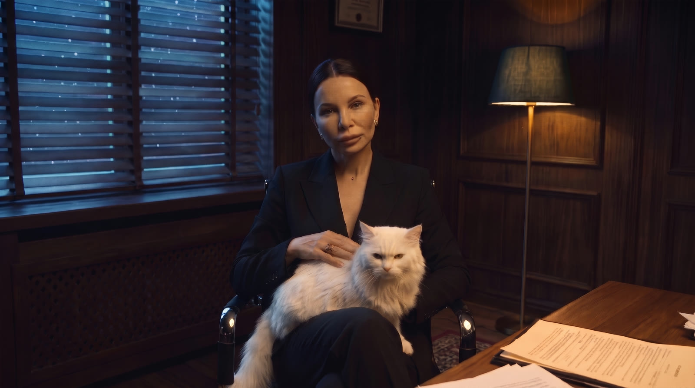
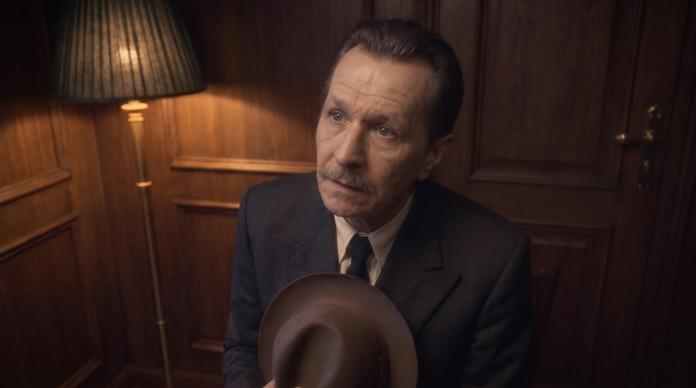

Сцена у Крёстной: монтаж
Сборка сейчас (63 с, без новых вставок): смотреть · части по отдельности
Внутри диалога прямые склейки, растворение 1 с только Настя → менеджер. В каждом плане камера движется.
1. Вступление, стол, кот → Настя
готово
2. Общий план сбоку: кто где сидит, 3 с тишины
новый, нужно оживить

3. Менеджер просит, наезд
готово

4. Вставка: его пальцы мнут шляпу
новый, нужно оживить

5. Её молчаливая реакция 3/4, камера снизу, 1,5 с
новый, нужно оживить

6. Настя отвечает, клип 1: общий → дальний
готово

7. Вставка: кольцо в шерсти кота
новый, нужно оживить

8. Настя отвечает, клип 2: отъезд дальше
готово

9. Он извиняется крупно, сверху, наезд
готово

10. Она крупно, снизу: «Ладно, но будешь должен»
кадр есть, оживить следующим

11. Его глаза, поцелуй руки по движению, кадр замирает
дальше